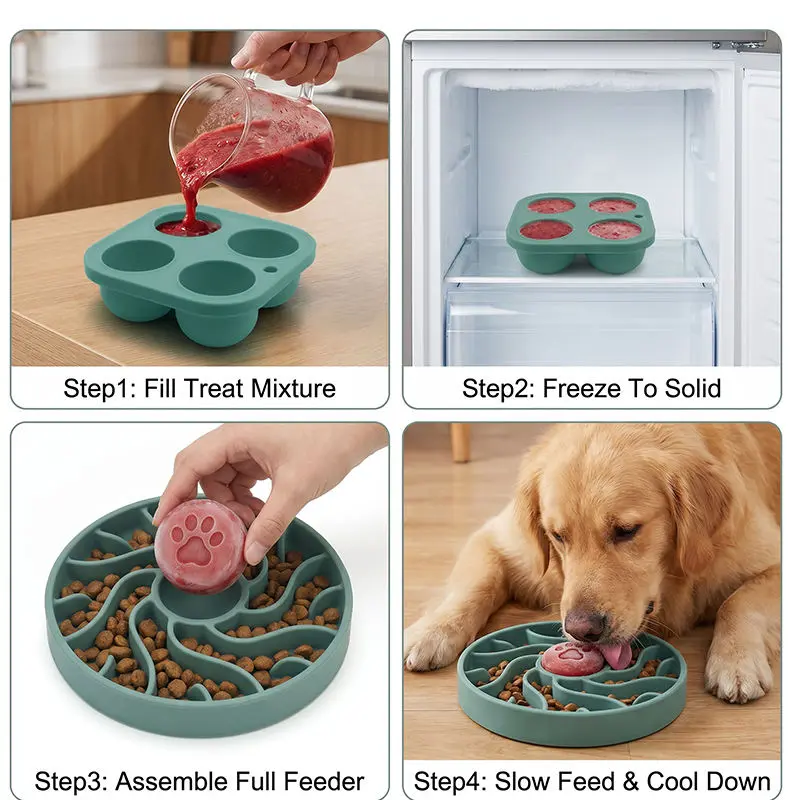
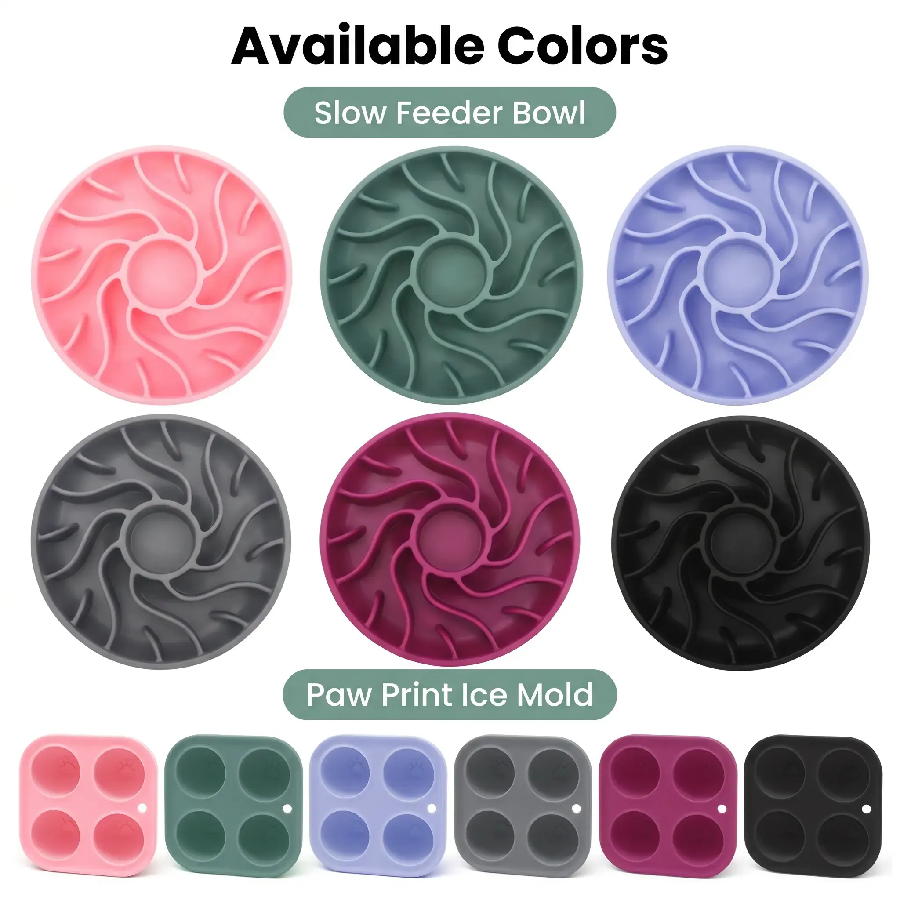
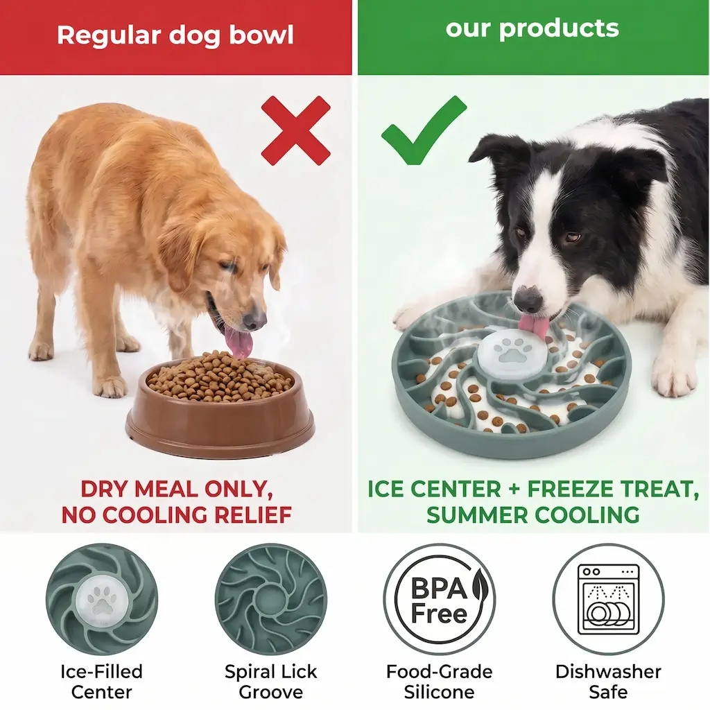
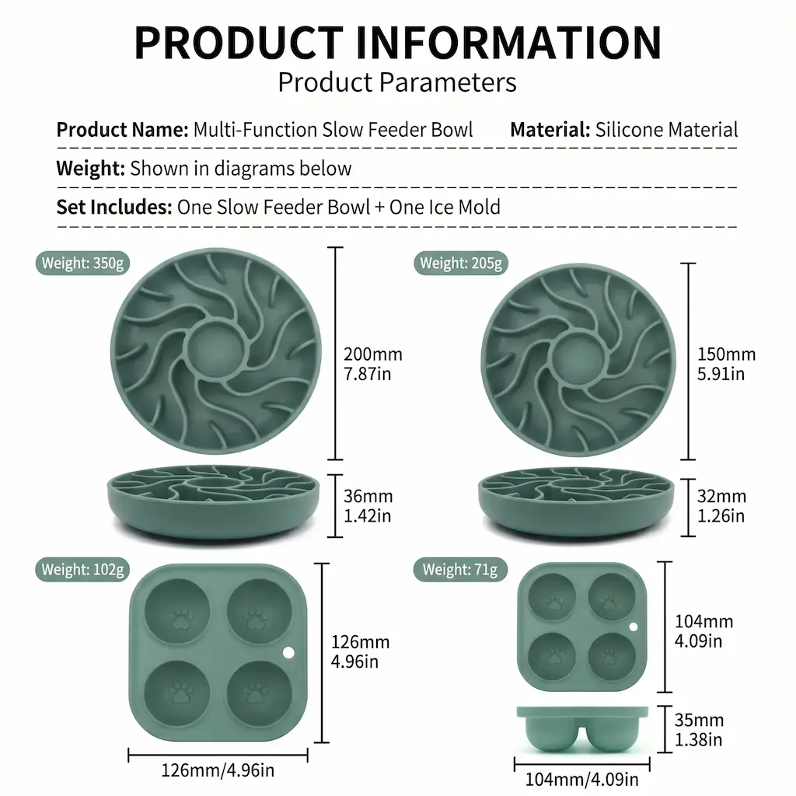
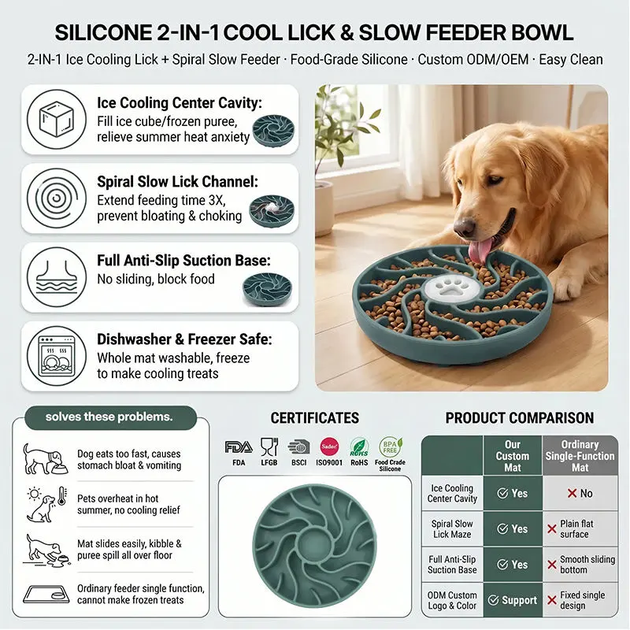

2-in-1 Slow Feeder & Lick Bowl Tray
342×177×68mm · Anti-spill tray design
View Product





Available Colors
Custom colors available for OEM orders (MOQ 2,000 pcs per color)
| Material | Food-contact safe silicone (BPA-free, FDA / LFGB — certificates available on request) |
|---|---|
| Set Includes | 1 × Spiral Slow Feeder Bowl + 1 × Paw Print Ice Mold |
| Size — Large | Bowl: Ø200mm × 36mm · Weight: 350g Ice Mold: 126×126×35mm · Weight: 102g |
| Size — Small | Bowl: Ø150mm × 32mm · Weight: 205g Ice Mold: 104×104×35mm · Weight: 71g |
| Colors | Pink, Sage Green, Purple, Gray, Rose Red, Black |
| MOQ | Contact us for wholesale pricing & MOQ |
| Sample Lead Time | Approx. 7 days |
| Production Lead Time | 15–25 days after sample approval |
| Customization | Logo, color, packaging available |
| Certifications | FDA · LFGB · BSCI · ISO9001 · RoHS · BPA Free |
This set combines two functions in one feeding solution. The spiral slow feeder bowl features deep lick channels arranged in a pinwheel pattern. Dogs must navigate the ridges to reach their food, naturally extending mealtime by up to 3× and reducing the risk of bloating, choking and anxiety from eating too fast.
The center cavity accepts a frozen treat made using the included paw print ice mold — fill the mold with puree, broth or yogurt, freeze, and place in the bowl center before serving. The frozen treat provides cooling relief in summer and adds an enrichment element that keeps dogs engaged throughout the meal.
Made from food-contact safe silicone — non-toxic, odorless, BPA-free and free from PVC and phthalates. Certified to FDA, LFGB, BSCI and RoHS standards. Silicone is chemically inert and does not absorb food odors or bacteria between uses. Certification test reports are available upon request prior to order placement.
Both the slow feeder bowl and the ice mold are dishwasher safe and freezer safe. The smooth silicone surface rinses clean easily under running water. No residue traps — unlike plastic feeders with sealed crevices, silicone flexes to release any food caught in the spiral grooves.
Available for wholesale and private label programs. Customization options include:
Large (Ø200mm) is suitable for medium to large breeds. Small (Ø150mm) works well for smaller dogs and cats. Both sizes are available as a wholesale SKU — many buyers carry both for a wider range of end customers.
Yes. The spiral slow feeder bowl functions independently as a standard slow feeder. The ice mold is an optional add-on for summer feeding or enrichment. The center cavity remains open when no frozen treat is used.
The suction base performs well on smooth tile, hardwood and laminate floors. As with all suction products, performance varies slightly on textured or uneven surfaces. We recommend testing a sample on your target surface type before bulk ordering.
Yes. We handle FBA-compliant packaging including FNSKU labeling and ship directly to Amazon fulfillment centers in the US, UK and EU.
Yes. The bowl and ice mold can be ordered as a set or individually. Please contact us with your preferred configuration and quantities for a custom quote.